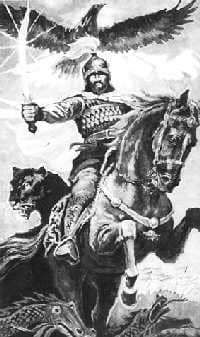

Çok eski dönemlerde, kervanlar döneminde, gün ışığında tulpar eşinirken, ay ışığında kemerini çıkartamamıştır. At üstünde uyuyan erler döneminde yaşadı. Aç arslan gibi suratıyla, düşmana saldırdı. Bayrağı gökyüzünde dalgalandı. Şanı dünyaya yayıldı. Başından ak kalpağı çıkmadı. Kükreyerek yaşadı. Bunlar Kırgız denen çok eski bir ulustu. Onların bayrağı gök mavisi idi. Dostları az düşmanı çoktu.
Tanrı Dağı’ndaki eski Kırgızların başında, halkının şanını duyuran Karahan isimli Han, tahta geçti. Şanı gökyüzündeki yıldızlara gitmişti.
Tanrım hiçbir şeyi sonsuz yapmadı. Karahan da öbür dünyaya göç etti. Onun tahtına oğlu Oğuz Han geldi. Oğuz Han da adil ve heybetliydi. Türk eline, Kırgızlara baş oldu. O da bir gün dönüşü olmayan yere gitti. Oğuz Han’ın ardından Babir Han, sonra Tüböy han, sonra Kögöy han baş olular. Kögöy Han’dan sonra Nogoy Han baş oldu.
Bir saksağan, Nogoy Han’a uğursuz bir işaret getirdi. Kötü ve kurnaz Kara-Hitay Hanı Esenhan ona savaş açtı. Nogay Han’ın beli koptu. Ak otağı yağma edildi. Ocağı bitti. Kabileleri dağıldı.
Nogay Han’ın Orozdu, Üsön, Bay, Cakıp (Yakup) adında dört oğlu bulunuyordu. Onlar kervan göçüne başladılar. Biri Altay’a biri Opal’a, biri K’şgar’a, biri Tibet’e gitti.
Kırgızlar Akbalta Batır’ın korumasına girdiler. Akbalta Batır’ın he dediğini yaptılar. Akbalta aksakal bir ve kutsaldı. Onu destekleyen, ona rehberlik eden bir meleği vardı. Kırk Kırgız ailesi Altay’a ulaştı. Aç ve açıkta kaldılar. Düşünürlerken; Akbalta boz boğayı seçip, kurban ederek halkına şunları dedi:
Halkın dinginliğini bozar. Ulusların kötüsü olmaz. Kalmuklar da, Mançular da iyi uluslardır. Malın, mülkün yoksa eksik kalırsın, varsa rahat edersin. Kalmuklarla savaşmayalım. Hayvan yetiştirip, toprak sürelim. Altay’ın toprağı altın gibidir. Çalış Kırgız, belini bağla ve başını kaldır.
Yurdu olmayan Kırgızlar, Akbalta’nın sözünü doğru buldular. Kalmukların Hanına Ala Dağ’dan getirilen gümüşlerle süslenmiş tulpar (kırat)ı armağan ettiler. Altay’da yaz için yeşil yayla, kış için düzlükten yere kondular.
Günler geçti, yıllar geçti. Altay’daki Kırgızlar Kalmuk ile Mançuların arasında canlandılar. Türk soydaşları ile ilgi kurdular. Malları çoğalıp, kırk aile yetmiş olunca, ordu düzüp hilâl işaretli bayrağını dalgalandırdılar ve düşmanı ürküttüler.
Cakıp Bay’ın yurdunda kırk beyaz çadır kuruldu. Evlerin bacalarından çıkan duman yurdun bereketini gösteriyordu. Cakıp kır atına binerek yurttan ayrıldı. Çocukluğunda Kalmuk, Moğol ve Çinlilerin bir kölesiydi. O, Çinlilerin eziyetlerine direnebilmişti. Çinlilerin ve Kalmukların dilini öğrendi. Aklı erdi, boylu poslu oldu. Önceki şımarık Cakıp artık yoktu, kibar olmuştu. Kalmukların arasına girdi. Çıyırdı isimli hanımının üzerine Kalmuklardan Bakdöölöt isimli bir kız aldı.
Cakıp, sekiz yıl sonra Altay’da kendi evini kurdu. On aileyi birleşti, bir odaya yerleştirdi. Geniş yerlerde, çiftçilik ettiler. İyi para kazanıp, işlerini büyüttüler. Altay’da 30 yıl zaman Çinliler ve Kalmuklardan eziyet görmüş olan Cakıp Bay onlara “Han” olmuştu. Bir kızıl cins ata binecek duruma gelmişti. Ağılında bol hayvan, heybesinde bol yemek, hazinesi bol altınla doluydu ama Cakıp Bay’ın yüreğinde hala acı vardı.
Sayısız sığırı ve devleti vardı. Ama kara günlerde on sahip çıkacak, ocağını sürdürecek kendine varis olacak bir evladı yoktu. Cakıp Bay’a obada “ihtiyar”, “çocuksuz ihtiyar” deniliyordu.
Tanrısı Ak Taylak’a seslendi, çocuğum yok diye ağladı. Hanımı Çıyırdı’yı miskin karısını götürüp, atalarının mezarında durdu, dua edip Tanrı’ya yalvardı. Ama Tanrı onu duymadı.
Bir gün dağda dertle telaşla, saçını başını yolup “Tanrım benden bir evladı neden esirgiyorsun?” diye sordu.
Yanında Cakıp Bay dağdan inerken sakalı göğsünde bir derviş gördü. Derviş, Kara Önkür’e bazen gelirdi. Kıpçak soyundandı. Dünyaya zenginliğe doymuş bir adamdı. Bu dervişle konuşmak istedi Cakıp, atından indi.
Dervişe, “Yaşım kırk sekize geldi, gençliğimde mal ettim. Gördüm ki çocuğu olmayanın malı mülkü kurusun olmasın. Cakıp, Dervişe derdini anlattı.
Derviş düşündü.
“Bir yerden duydum. Tibet’e gidersem bir çeşit ottan yapılmış bir ilacı getireceğim. Geçmişte atalar, hanımı doğurmazsa onu küçümser, hakir görürlermiş. Eskiler böyle anlatırdı” dedi derviş.
“Evliyam, sözüne, aklına sağlık” Cakıp dervişin eline altın vererek yolcu etti.
Çakıp Bay’ın Çocuk Sahibi Olma Arzusu
Çocuk arzusuyla kıvranan Cakıp Bay, hasret sözleri söyleyerek Altay’ın dağlarında hüzünle dolaşıyordu. Çıyırdı’nın yüreği sızladı, öleyim dedi. Yer kabul etmedi. Gözlerinden yaş dökülüp üzüntüden kıvrandı. Cakıp, büyük bir ümitsizlikle giderken bir adacıkta Mengdibay hiçbir şey olmamış gibi oturuyordu. Hiçbir şeyden korkmayan Mengdibay, Cakıp Bay’a akla gelmedik olayları anlattı:
Hayrete düşen Cakıp, avula gelip çocuktan duyduklarını sadece hanımına anlattı.
Ertesi gün Cakıp, hanımları, avuldaki büyükleri ve yakınları ile danışarak gece gördüğü rüyası lâyıkıyla büyük bir ziyafet vermeye hazırlandı.
Cakıp ziyafete Altay’daki on iki kabile ile birlikte, Kırgız’ı, Kazak’ı, Noygut’u, Nogoy’u Türk soydaşlarını, bunlardan başka yine Kalmuk ve Tırgoot Moğolları da davet etti. Altın hazinesinin ağzını açtı. Ziyafete gelenler Cakıp’ın bu cömertliği hakkında kendilerine göre yorum yaptılar.
Kalmuklar, Moğollar basiretli halk olduğu için, kusur bularak “Kırgız’ın malı var ama devleti yok. Cakıp’ın bize yaltaklanması bize tabi olmasındandır” diye düşündüler. Cakıp Bay ise “Allah ü Te’l’ bize rüyayı boşuna göstermemiştir, bu bir hayırlı işarettir, rüyam gerçek olur mu, yüreğimdeki buzları eritir mi” diye dua edip iyi dilekler diledi.
Bilgiçler, akıllılar, rehberler başlarını eğip, sarkmış uzun ak sakallarını sıvazlayıp, Cakıp’ın gördüğü rüyayı zevkle dinleyip oturdular.
O zaman Cakıp şöyle dedi:
“Halkım! Bir acayip rüya gördüm, rüyamda böyle bir iş gördüm. Ala dağ’da dolaşıyordum. Bir kuş yakaladım. Kuşun ötmesi çok değişikti. Kuyruğu ve başı parlıyordu, gagası çelik, ayağı hançer idi. Uçurduğum zaman göğün altını, kara yerin üstünü karıştırdı, gökteki kanatlılar, yerdeki ayaklılar ona karşı gelemediler, hiçbiri kurtulamadı. Halkın rüyamı yorunuz. Bunun tabiri nedir?
Oturanların hiçbirinden ses çıkmazken, aksakallı, görmüş geçirmiş Bay Cigit, Cakıp’ın rüyasını iyiliğe yordu:
“Ey Cakıpım, hanımının ve senin gördüğün rüya çok güzel rüyadır. Millete hayırlıdır. Başına talih kuşu konmuştur. Arzuladığın erkek çocuk dünyaya gelecektir. O arslan gibi heybetli bir kahraman olacaktır, dünyaya hakim olacaktır. Başına devlet kuşu konacaktır. Rüyalarınız gerçek olsun! Niyetiniz makbul olsun!
Tanrı yardımcınız olsun!” Dağılan halk Tanrıya sığınıp sevincinden hıçkıran Cakıp’a hayır dualar ettiler.
Ziyafet yapıldı ve geçti. Ertesi gün, Cakıp’ın avulundakiler soğuk bir kara bulutun yer yüzünü kapladığını gördüler. Bu kötü haberin işareti idi. Nihayet söylenenler doğru çıktı, kötülük avula çabucak geldi. Cakıp Bay’ın yaptığı ziyafetin haberi Kalmuk ve Hitay hanlarına ulaşmıştı. Bu haberi aldığında Esen Han yerinde duramadı.
Hitayların ve Kalmukların, Kırgızlarda ezile öcü, bitmez tükenmez intikamı vardı. Esen Han “Kırgız hanları, bizim batı ve kuzey tarafa yaptığımız yağmaları hep engellediler. Birkaç defa ipek, kumaş, çay ve türlü eşyalarımızı, kervanlarımızı yağma ettiler. Bugün öldürsen, ertesi gün tekrar kalkan böyle inatçı halk görmedim.” dedi. Kardeşi Kara Han’a mektup yazıp mührünü bastı. Kırgızlardan, Türklerden, Kazaklardan yağmaladıkları kumaşı, pars kürkünü, bir kutu altını hediye koydu. Bunlara dört beş kahin de gönderdi.
Gönderilen kahinler üç ayda geldiler. Kutsal kitapta şöyle yazılmıştı:
“Kuzeydeki Kırgızlardan Manas adında bir alp doğacaktır. Onun arkasında kara mavi yelesi, omuzu üzerinde tahta gibi kızıl beni olacaktır. Manas, Kalmuk ve Hitay’ı karıştıracaktır. Gök ile yerin güzelliği olan ulu şehir Pekin’i harap edecektir. Altı ay Han olacaktır. Hitay kahramanları tutsak olup ölecektir.”
“Vahşi Kırgızların hamile kadınların tümünü cezalandırın! Çocuklarını Köle edin Manas’ı bulup getirmezseniz hiçbirinizi canlı bırakmayacağım.”

Manas’ın temsili resimlerinden biri.
Böyle zor durumda, altın karşılığında çalışan casus Kalmuk rahibi, Cakıp Bay’a yedi gece yaya yürüyerek geldi. Bu haberi ona söyledi. Kırgızlar kaçamadılar. Ertesi sabah Kalmuk askerleri boynuzlar çalarak Cakıp’ın avuluna girdiler. Kalmuk askerleri yetmiş Kırgız ailesinin hamile kalan kadınlarını topladı. Kılıçlarıyla karınlarını yararak bebeklerini çekip çıkardılar, kemiklerini köpeklere verdi.
Askerler, sütten kesilmemiş bebeklerden, yaşı on yediye kadar olan çocukların hiçbirini bırakmadan at gibi dizip, adını sorarak saydı. Manas adlı çocuğu bulamayınca kaçamayanları öldürüp kalanları dönüşü olmayan Pekin’e götürdü. Han avlunu yağma etti.
Alevke’nin askerleri, Kırgızlardan Manas çocuğu bulamayınca, her yeri cehenneme çevirerek onu başka Türklerde aradılar. Oralarda da bulamayınca Buhara’ya, Semerkant’a girdiler. Sonunda Semerkant’ta kamburu çıkmış, geniş omuzlu Car Manas adlı Çon Eşen’in çocuğunu bulup, gözlerini bağlayıp, ayaklarına demir bukağı takıp, sevinerek Pekin’e götürdüler. Kalmuk gözcülerin, kervanların ulaştırdığı habere göre Çon Eşen’in Manas adlı çocuğunu Hitay, kırk ip boyundaki büyük zindana koyup bir beladan kurtulduklarını düşünerek huzura kavuştular.
Taşa damga basan, demiri toprak gibi yoğuran Döğür Usta başta olmak üzere gözcülere sezdirmeden ormandan kömür hazırlayıp, dağdan demir kazdırıp, örtülü kara keçe evini ustahane (atölye) yaparak Davut ata mesleği diye pulat kılıç ve mızrak yaptılar. Her erkek için birer kılıç ve mızrak yapıldı. Akbalta, bunların çoğunu deriye sararak kuru toprağa gömdürüp üzerine işaret koydu.
Bir yıl geçti. İki yıl geçti. Cakıp, sonraki zamanlarda daha kuvvetlendi, yüzüne renk geldi, gönlü açıldı, hayatını daha düzenli hale getirdi. Cakıp’ın canlanmasında bir neden vardı. Tatlı Hanımı Çıyırdı, hamile kalalı üç ayı bulmuştu Çıyırdı, Kırgız’ın da, Kalmukların da, Hitayların da yemeklerini istemedi. İstediği şeyin arslan kalbi olduğunu söyledi.
Manas’ın Annesi Çıyırdı Doğurmak Üzere
Dokuz ay geçti. Çıyırdı’nın karnı doğum zamanı geldi. “Kalmuk rahibi asker başıyla geliyor!” şeklindeki haber Kırgızlara ulaştı. Cakıp bay kendini kaybetti. Beklenen gün de yaklaştı. Çıyırdı’nın doğum anı geldi. Hanımın sancısı geldi
Manas döneminde Kırgızlar.
Sancı başladığında Cakıp’ın evine kadın şamanlar girdiler. Kadınlar telaşlanıp beyaz evde gürültü ettiler. Cakıp efsun okuyup, inek, enenmiş deve kurban kesti. Avulda Çıyırdı’nın bağırmaları, çığlıkları yedi gün sekiz gece devam etti.
Yetmiş Kırgız ailesinin erkekleri bunu öğrenince Cakıp Bay’ın evine gittiler, olup bitenleri seyrettiler. “Tanrım ne verecek” diye küçükten büyüğe herkes meraklandı. Dokuzuncu gece Çıyırdı’nın sancısı bitince kadınlar heyecanla bağırıştılar.
“Cakıp Bay, Hanımın şimdi doğuracak” sözünü duyunca, Cakıp, çocuğun sesini duyduğumda kalbim parçalanmasın diye tepelere gitti.
Böylesini hiç kimse görmemişti. İnsanlar sevindiler. Etraf sakindi, hayat durmuştu, kuşlar uçmadılar, sular akmadılar. Köpekler havlamadılar, otlar sallanmadı. Bu iyilik işaretiydi. Bu çocuktan ürken, korkan olmadı. Hepsi sırrın açıklanmasına beklediler. Hepsi kulaklarını açtılar.
Ağlayan çocuğun sesi duyuldu, yer sallandı. Gök gürültüsü duyuldu. Ak Otağ’a kut düştü. Gökkuşağı ışığı Cakıp’ın avulunun üzerini yürüdü. Bebek iki elinde kan pıhtısı ile geldi. Bebeğin on beş yaşı gibi ağırlığı vardı. Çırpınışları büyük insanın kuvveti kadardı. İki omzunda kara yele vardı. Üç tulum yağı bir kerede yedi. Çıyırdı bebeğe memesini verdiğinde önce süt sonra kan çıktı. Hanıma bu ağır geldi.
Yetmiş Kırgız ailesinin mutlu zamanı gelmişti. Yıllardan beri çocuk ağlamasını duymayan Kırgızlar çok sevindiler.
Cakıp, bebeğin göbeğini kokladı. “İhtiyarlıkta sahip olduğum oğlan bu mudur” diye bebeğe dikkatlice baktı. Çocuk ağırbaşlı, gözü açık, kaşları çatık, arslan boyunlu, sert, kaplan gibi heybetli, kuvvet fışkıran bir oğlan idi. Cakıp, çocuğun arkasında mavi yele vardı. İki omzunda koruyucu melek kükrüyordu.
Bir ak sakallı derviş, tünekten inerek “Oğlunun adı Evliya’dır. Büyüyünce savaşçı olacaktır. Bir çelik ok yaptırt, onu çocuğuna emdir. Asıl gerekli olanını yakasına tak. On ikiye girdiğinde bir ustaya yay yaptır. Büyüdüğünde altı yiğide verilmesi için gökten altı kılıç inecek” dedi. İhtiyar evliya çocuğun alnını üç kez sıvazladı. Çıyırdı ana dervişin dediklerini başkasına anlatmadı. Çelik oku çocuğa emdirdi, gömleğinin yakasına ipek iple dikip taktı.
Yurdun büyük adamları Cakıp’a katıldılar. Ama Kalmuk Tırgot, Çinliler ve Moğollar “Bu Kırgız Ak Otağ kurduğu için mi böyle şımardı? Onun bizim bilmediğimiz bir çocuğu var. Alevke’ye bildirelim” diyerek kötülendiler.
Cakıp, her kabilenin başta gelenlerini, yakınlarını, bilgili aksakalları, her birine elbise giydirdi. Çocuğunu sağ eteğine koyarak, Hanımını peşine takıp meydana geldi. Çocuktan çıkan ışığa bakanlar halk şaşıp, kaldı.
Bu sırada beyaz çadıra yırtık deri elbise giyen, elinde beyaz asası olan, beline çakmak taşı bağlı, ayağı çarıklı, ak sakallı, ak külahlı derviş içeri girdi.
“Millet” dedi yüzü ışıldayan derviş, oturanlara bakarak, “müsaade ederseniz nur yüzlü çocuğun adını ben vereyim.”
Onlar da; “ Ağzından çıkan kutlu olsun, çocuğun adını sen ver ihtiyar” dediler.
“Söylemek benden, söz Tanrı’dan. Çocuğun adı Manas olsun! Ulu ismine layık savaşçı olsun! Belalardan uzak kalsın” dedi gözlerinde ateş olan evliya derviş. Elindeki asasını çocuğun üzerine silkerek “Manas ok geçirmeyen kürklü ol! Ok yetişemeyen atlı ol! Sana dokunanları kılıçtan geçir, karşına düşman çıkarsa belini büküp öcünü al! Seninle tutuşan yenemesin, sana dokunana aman verme! Yalnız başına bozkurt ol, kırk kişiye bedel ol! Adını şimdilik sakla.” dedi.
Manas Manas olunca, adı sanı duyulunca, yurtta ona denk olan çıkmadı. Küçük Manas, bağırdığında dağdaki hayvanlar ürkerdi, ormandan kaplanlar kaçardı. Manas bebekliğinde ağlamak, nedir bilmezdi. Ocaktaki ateşten yalın ayak geçerdi. Çam ormanında tek başına gezerdi. Büyük taşları dağdan yuvarlardı. Büyük çocukların elini sıkıp ağlatırdı.
Manas’ın Çocukluk Adı Çong Cindi Olmuştu
Üç yaşına geldiğinde “Çong Cindi” diye bilindi. Delikanlılarla denk oldu. Gök öküzün boynuzunu kırdı. Onunla karşılaşmaya kimse çıkamazdı. Çong Cindi dört yaşına geldiğinde dövüşmeye başladı. Kara ağacı yerden köküyle birlikte koparıyordu. Suya bastığında batmazdı, ateşe bassa yanmazdı. Arslan kadar heybetli olmuştu, belalı Cindi diye nam salmıştı.
Çong Cindi beş yaşına geldiğinde, marifetini herkese gösterdi, öküz büyüklüğünde taşları kaldırmaya başladı, yılanın başını ısırıyordu, bir tulum kımızı bir kerede içiyordu. Genç Manas altı yaşına geldiğinde uzun boylu, kahramanlarla denk oldu. Çong Cindi adını terk etti. Kendi adını istedi. Manas, yedi yaşında kırıp dökmeye başladı. Herkes ondan bezdi ve kaçtı. Deliliği çoğaldı, bir kuzunun eti doymasına yetmedi. Onunla güreşecek adam kalmadı.
Manas sekiz yaşına girip erkeklik çağına gelince, kendini kırlara vurdu. Evine girmedi. Kervan yolundan gelenleri, tüccar ve kervancıları soydu. Avuldakiler, dedikodu yaptılar ama hiç kimse karşısına çıkamadı.
Bir defasında Manas, avuldan kırk çocuğu alıp, Altay’ın tepelerinde karargâh kurup eğlence yaptı. Bu sırada, Kalmuk, Tırgot, Moğol’un seksen çocuğu gelip avulun çocuklarına büyüklük tasladı.
Kalmuk çocuklarının başı Manas’a sopayla vurdu. Manas dayaktan sonra beklemedi. Yerdeki değneği aldı, Kalmuklara öyle bir salladı ki, değneğin vurduğu on iki çocuk öldü. Manas’ın heybetini gören Kalmuk çocukları kaçtı. Kırk Kırgız çocuk Kalmukları kovaladılar. Manas, Kalmuklara yetiştiğinde, Cakıp Bay ortaya çıktı. O olaydan beri Cakıp oğlundan kaygılanıyordu.
Cakıp hanımına danıştı. Manas’ı Oşpur’a vermek istedi. “Çocuğu uşak mı yapacak, Hanzade mi yapacak, budala mı yapacak kendisi bilir. Onun eline verelim, Kalmukların gözünden ırak dursun” dedi.
Oşpur çobanların başı Tengir Bay’a tabi, töreleri iyi bilirdi, sözü, özü birdi. Oşpur, gençliğinde dünyadan bıktığı için halkının arasına geç girmişti. İhtiyar görünmesine rağmen tekmeyle taş yarardı. Eliyle her şeyi kırabilirdi. Yedi gecede Kalmuk ve Çin’e gider, gelirdi. Oşpur, dağdan düze pek inmezdi. Ak karlı, mavi buzlu yükseklerde kuzuların otladığı yerlerde geçirirdi bütün zamanını.
Manas Oşpur’un yanında kaldı. Ertesi günü kara kulübede uyumakta olan Manas’ı Oşpur tan atmadan uyandırdı. Manas, nehire elbiseleriyle girdi. Manas bir taşa takılıp kayarak düştü. Suda sürüklendi. Boğulmak üzereydi, Oşpur’a baktı. Oşpur o andan sonra Manas’ı rahat bırakmadı. Yayladaki Süt-köl isimli suyu çok soğuk olan derin göle, çevresinde Kamçatka ördeklerinin olduğu yere götürdü. Beline ip bağladı, suya daldırdı. Manas yüzmeyi öğrendi.
Oşpur’un eziyetleri böyle başladı. Oşpur’un eziyetleri, Manas’ın hoşuna gidiyordu. Oşpur’un söylediklerini, itiraz etmeden yapıyordu. Savaşçı olmanın kolay olmadığını anlamıştı Manas.
Manas yayın nasıl yapılacağını, nasıl çekileceğini bir ayda öğrendi. Dayanıklı mızrak yapmanın sırrını iki ayda öğrendi. Üç ayda kılıç yapmayı ve kullanmayı biliyordu. Dört ay sonra erkek yarışlarını (at üzerinde yapılan bir birini eyerden düşürme yarışını) öğrendi. Beş ayda Oşpur ile güreş tutuştu.
Oşpur’un bilmediği yoktu. Tibet ve Çin’den öğrenip geldiği sırrı vardı. İneğin derisini asıp eliyle saplayarak delmeyi, bir değnekte otuz kişiyle tutuşmayı, tekme atmayı Manas ondan öğrendi.
Altı ay sonra zayıfladı. Boyu uzadı, yaramazlığı bitti. Vücudu kuvvetlendi. Oşpur, Manas’a güvendi. Çege Bay’la birlikte koyun gütmeye gönderdi.
Manas on yaşına geldi. Tırmanmaya dağ, savaşmaya düşman bulamadı. O dağdaki çobanlardan kırk çocuk bulup almak istedi. Bir sıcak yaz gününde, Manas ile Çege Bay dağa koyunları otlatmaya çıkmışlardı.
Tam karşıdaki kaya taşında bir kurt, koyunları arasında aksak beyaz kuzuyu yakalayıp güpegündüz parçaladı. Bunu gören Çege Bay’ın ödü koptu; bağırmak için sesi dahi çıkmadı, ardıç ağacına çıkarak saklandı.
Kurt kaçıp gidiyordu. Manas akan kanın izinden onun peşine düştü. Kurt, kara mağaraya girdi ve saklandı. Manas da onun peşinden mağaraya girdi.
Manas, mağarada gördüklerine inanamadı. İri yarı, güzel elbiseler giymiş kırk kişi oturmuştu. Kanatlı atları vardı, yüzleri nurluydu.
Manas ile Çeğe Bay koyun kuzularını saydılar, eksik yoktu. Manas gördüklerini iyiye yordu. Beyaz kuzuyu Çeğe Bay’la kızartıp, yediler. Oşpur, tepe boyunca, deredeki çukurda Manas başta olmak üzere kırk çocuğu eğlenirken gördü. Çocukları seyretmek için bir söğüdün altında oturdu.
Çocuklar artık büyümüşlerdi. Onlar durmadan ordo oyunu oynuyorlardı. Kazandaki etleri yediler. Çocukların içinde Manas Opol dağı gibi görünüyordu, o diğerlerinden farklıydı.
Kırk çocuk Manas’ın ona saygı gösterdi. Manas bununla yetinmedi. Törelerde olduğu gibi somurttu. Çocukların “beğim” demelerini sağladı.
Manas söğüdün gölgesinde uykuya daldı. Sonra üst taraftan Kara Malmuk’un seyisi Kancarkol, bastırıp geliyordu. Bu kafirin hesabını Oşpur biliyordu. Kalmuk ve Çin’de, Sibirya parsı gibi, insanın başını eliyle kesebilen, elini göğüse hançer gibi sokan, bu nedenle Kancarkol diye adlandırılan biriydi. Oşpur, fırsat olsa da Kancarkol ile teke tek dövüşsem diye düşünüyordu.
Kancarkol, çocukları görünce fırlayıp, onları kamçılamaya başladı. Çocuklar sağa sola dağıldılar. At üzerinde dövüşemeyen Kalmuk attan indi. Kuşattığı çocukları vurarak öldürdü. Sonra onların üzerlerine oturdu.
Manas, gürültüden uyandı. O Kancarkol’a doğru kükreyerek geldi. Onun gücünü fark eden Kancarkol da tedbirini almıştı. Manas ile Kancarkol birbirini korkutmaya çalıştı. Kancarkol, Manas’a vurmak istedi. Kahraman Manas, kendini yana attı. Kalmuk’ın eli söğüde saplandı. Manas ayağıyla ona vurdu. Kucaklayarak yere fırlattı. Kancarkol yere serildi.
Oşpur, Manas’tan emin oldu. Çocuk, öğreneceğini öğrenmiş, olgunlaşmıştır, daha sağken Cakıp’a teslim edeyim dedi ve yola koyuldu. Oşpur’u gören Çıyırdı, sevindi. Heyecandan Oşpur’a hediye edecek, giydirebilecek elbise bulamadı.
Derin düşünceli olan Oşpur şöyle dedi:
“Oğlumuz amandır, kimseye yenilmez, güreşte, kimseye boyun eğmez biri oldu, kıvamına geldi. Söyleyeceğimi söyledim, vereceğimi verdim. Artık Kalmuklardan, Çinlilerden korkmaz oldu. Çocuğa ihtiyacınız varsa alabilirsiniz.”
Cakıp Bay, Manas’ı almak için Oşpur’la gitti. Cakıp oğlunun olgunlaştığını gördü. Oşpur, elini Manas’ın omzuna koyup vedalaşırken sordu:
Manas öğüdünü bitiren Oşpur’un önünde diz çöktü. Cakıp Bay’la Manas yola koyuldular. Doğuda güneş vardı. Batıda ay kaybolmamıştı. Tepeleri karlı dağlar, kül rengindeydi. Kuş sürüleri göç ediyordu. Otlar sararmıştı.
Cakıp Bay da, at üzerinde gururlu oturan oğlunu, dikkatle süzdü. Daha önce Hanımına çabuk varmak için atın dizginini silkti. Tör-Su nehrini geçip Ak-Ötek’e geldi. Uzaktan yükselen toz duman içinde, at sürüsü göründü. Çakıp atların önünü kesti. Damgalarına baktı. Onların kendi atları olduğunu gördü.
Bunu gören Manas öfkelendi. At çobanı Iyman’ın elindeki sırığı (kement) kaptı. Kükreyen Kortuk’un üzerine attı. Kalmuk’un başı parçalandı. Kalmuklar atlarının dizginlerini çektiler, şaşırdılar. Manas’ı yakalamaya çalıştılar. Mızrak ve kılıçla saldıran Kalmuklar, Manas’ı her yönden kuşattılar. Manas atıyla kaçarak sırıkla onları teker teker yere düşürdü. Kalmukların yedisi düştü. Manas, atının yorgun düşmesine rağmen kaçan Kalmukların peşine düştü.
Cakıp Manas’ın arkasından bağırdı. “Hey, yapma evladım, dur!” diye bağırıyordu Cakıp, “Kendine gel! Arkana bak. Bu yaptığın nedir? Köklü kabilen mi var senin? Keşke kırk yoldaşını bekleseydin? Tek başına Kalmukları öldürüp bitirebilir misin? Bırak yavrum dur!..”
Manas babasına acıdı, atının dizginin çekti. Cakıp; “Oğlum, Nogoy deden öldüğü zaman hansız kalan halk şaşırdı. Hayvanları talan edildi, kahramanlar köle edildi. Nazlı gelinler, küçük kızlar, cariye oldular. Böyle zilleti Tanrım kimseye vermesin. Zamanında güçlü olan halkın başına felaket geldi. Ocağı söndü. Pis Esen Han “Bu Kırgızlara yardım edenin kim olduğunu anlayamadım. Pek çok kez onları soyup soğana çevirdiysem de yine başını kaldırıyor. Başları bir araya gelirse tekrar dirilip kavga çıkaracak” diye yok edemediklerini, kum gibi dağıttı. Kırgız çocuklarını Çinlilerin, Kalmukların atlarına bakıcı yaptı. Karşılık veren Kırgızların dilini kesti. Usta okçuların gözleri oyuldu. Söz dinlemeyenin kulağına kurşun döküldü. Ata binip kuş gibi dolaşan halk, güneşin doğuşunu batışını görmüyor. Tutsak oldular. Kuma akan su gibi tutunacak yer bulamadılar. Çin Hanı Esen Han göçmen Türk ve Kırgız kahramanlarıyla “vahşiler” diye alay etti. Kalmuk, Moğol ve Tırgotlardan muhafız koyup dağa ve ata alışmış halkı, hayvanlara bakıcı yaptılar. Onlar, ancak yıllar sonra Altay’da birleşebildiler. İşte şimdi sen doğdun. Aklını buldun, kuvvetle doldun. Atalığın gereğini yerine getirdiler. Ben onlar kadar olamadın. Aklım, kuvvetim kafi gelmedi. Şimdi senin zamanın, senin yerine getirmen gerekenler var. Umudum sendedir. Halkın senden beklediklerini yap. Şerefini koru. Korktuğum şudur; artık sırtını dayayabileceğin ataların, o kuvvetli Kırgızlar yok. Etrafında toplanan arkadaşların yok. Yalnızsın, “
Gönlündekini söylediği için rahatladı Cakıp. Manas ise düşünmeye başladı. Manas aklına kırklar düştü. O anda karşısında gaza için var olan Kırklar peyda oldu. Onlar Manas’tan başka kimseye görünmeden, sözleri duyulmadan değişik bir şekilde geldiler. Manas, onlara Kortuk’u öldürdüğünü söyledi.